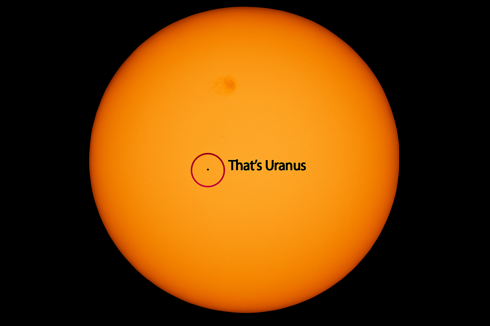

Uranus
Uranus is the seventh planet from the Sun. It is so faint that it's very hard to see without a telescope, and it was the first planet ever discovered using one. Uranus is tipped over on its side with a tilt of 98 degrees, so it looks like it's rolling around the Sun! Because of this, each pole gets around 42 years of sunlight followed by 42 years of darkness. Most of its moons are named after characters from plays by William Shakespeare.
| Uranus Facts | |
|---|---|
| Diameter | 51,118 km |
| Mass | 8.68 × 1025 kg (14.5 Earths) |
| Moons | 29 |
| Rings | 13 |
| Orbit Distance | 2,870,658,186 km (19.19 AU) |
| Orbit Period | 30,687 days (about 84 years) |
| Temperature (cloud tops) | -197°C |
This is what Uranus looks like compared to the Sun
